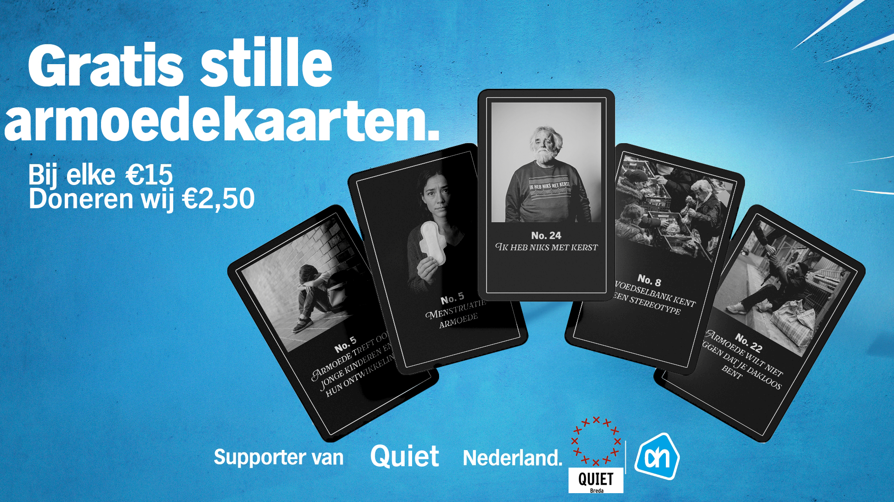

“Maak lawaai voor stille armoede”
Grafisch & Conceptueel ontwerp
Oktober 2025

Over het project
Voor creatief bureau Wars werkte ik samen met Quiet Breda aan een campagne rond stille armoede. De uitdaging was duidelijk: maak lawaai voor iets dat normaal onzichtbaar blijft.
In mijn concept heb ik herkenbare elementen uit de Albert Heijn stijl gebruikt. Een beeldtaal die iedereen kent, maar hier ineens een andere lading krijgt. Dat contrast tussen herkenning en realiteit maakt het confronterend.
Ik ontwierp een verzamelkaart waarin een persoonlijk verhaal centraal staat. Klein en simpel, maar iets wat je meeneemt en niet snel vergeet. Voor mij draait dit project om meer dan design alleen. Het gaat om gevoel, bewustwording en het raken van mensen.
